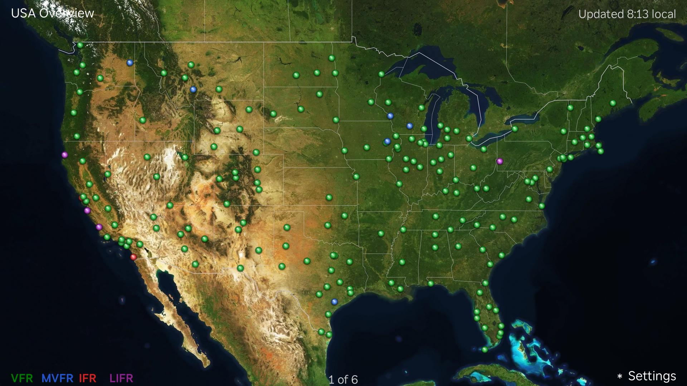
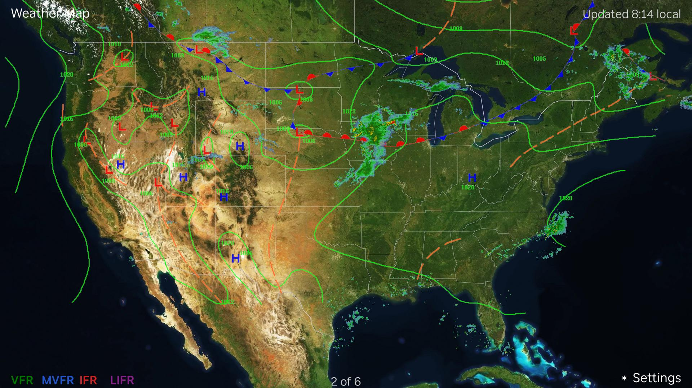
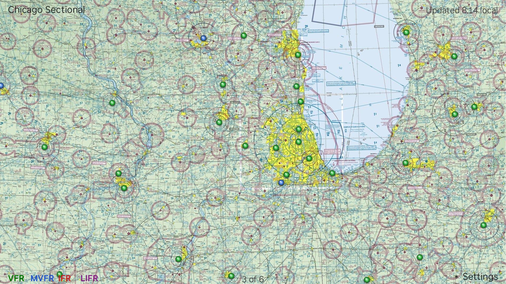

When your TV goes idle, AvLights turns it into a live aviation weather board —
every reporting airport in the country plotted on real FAA sectional charts and
colour-coded by flight category.

The national overview. Each dot is a reporting airport, coloured by current conditions.
Reading the colours
VFR — 3,000 ft & 5 sm or better
MVFR — 1,000–3,000 ft, 3–5 sm
IFR — 500–1,000 ft, 1–3 sm
LIFR — below 500 ft or 1 sm
Conditions refresh automatically every five minutes from the FAA Aviation Weather
Center, so what is on screen tracks what is actually happening.
A weather view, too

Live NEXRAD radar with surface analysis — isobars, fronts and pressure centres.
Real charts, real positions

The Chicago sectional. Airports are placed using the same Lambert Conformal Conic projection as the printed charts, so the dots land where the airports really are.
Yours to arrange
Switch individual regions on or off — show only the airspace you care about.
Set how long each view stays up, from five seconds to two minutes.
Sectional charts download in the background and are cached, so the screensaver starts instantly.
No account, no sign-in, no ads, no tracking.
Not for navigation or flight planning.
AvLights is for situational awareness and enjoyment. It is not a navigation,
flight-planning, or weather-briefing tool. Always consult official FAA and National
Weather Service sources before any flight. See the
terms of use.
Where the data comes from
Weather is provided by the FAA Aviation Weather Center and NOAA's National Weather
Service. Sectional chart imagery is produced by the U.S. Federal Aviation
Administration and is in the public domain. AvLights is an independent project and
is not affiliated with, endorsed by, or sponsored by the FAA, NOAA, or Roku.
This site also hosts the chart images the channel downloads at runtime, described by
manifest.json and revised on the FAA's 56-day cycle.